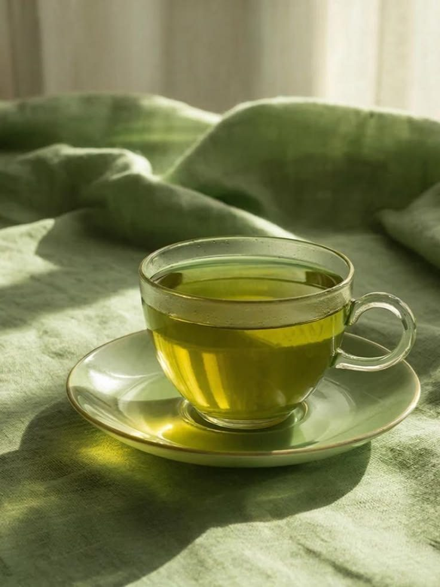
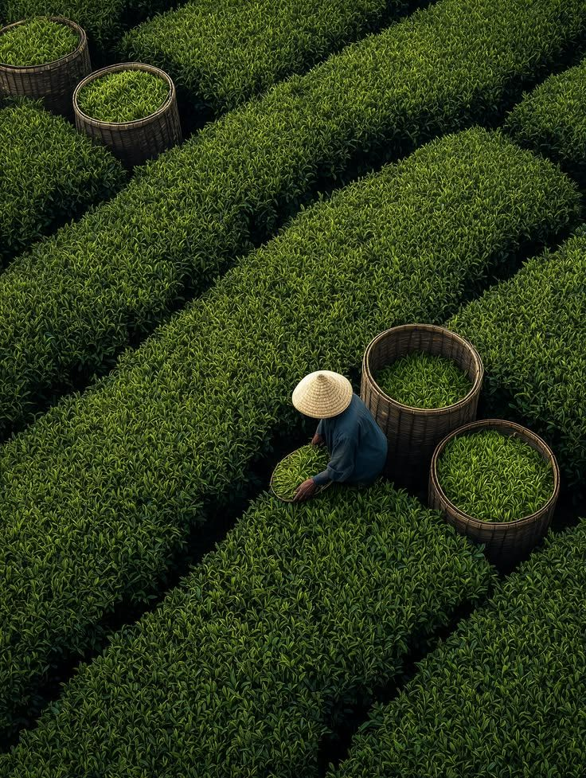
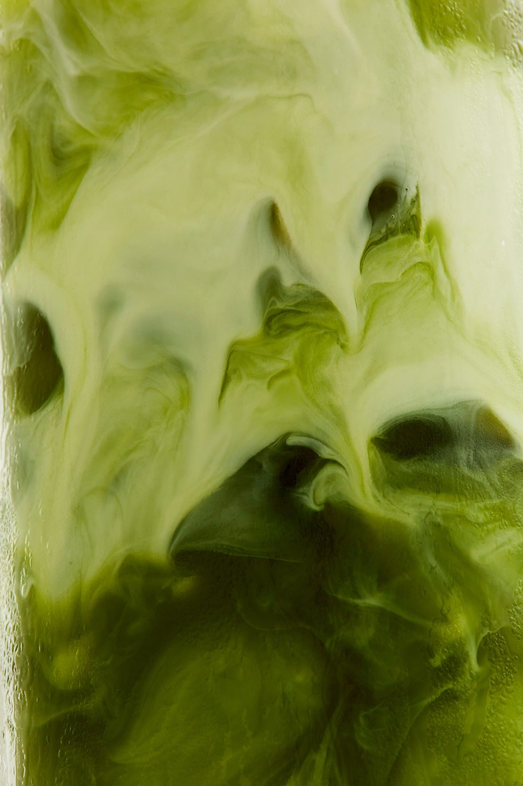
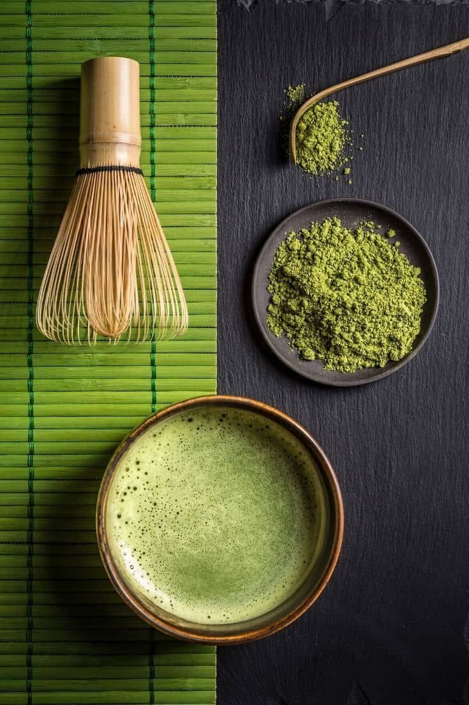
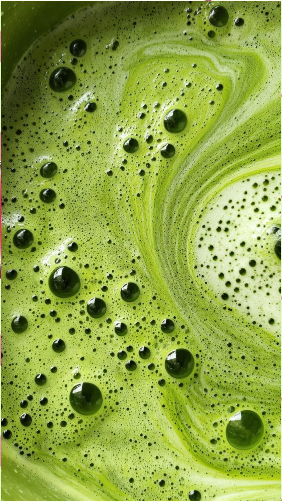
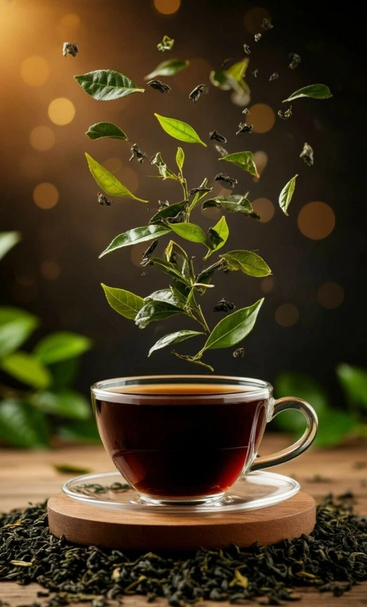
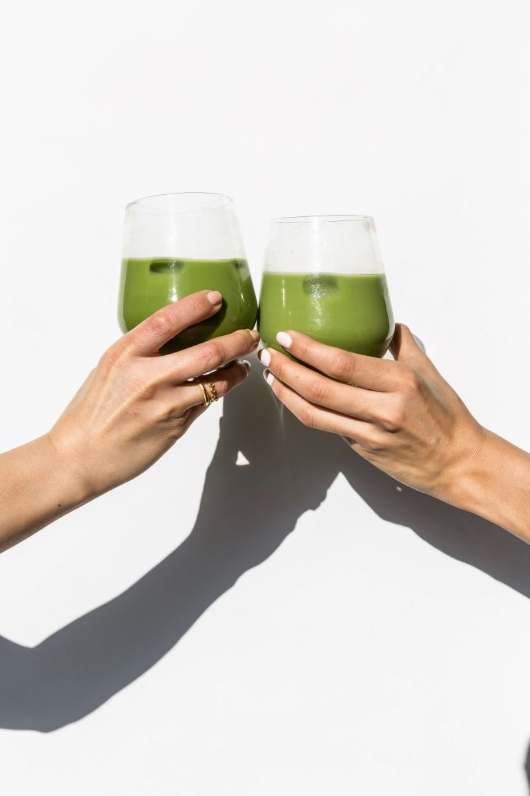
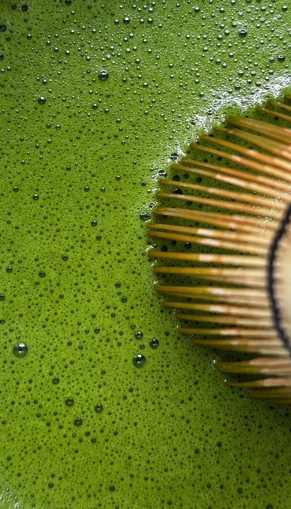
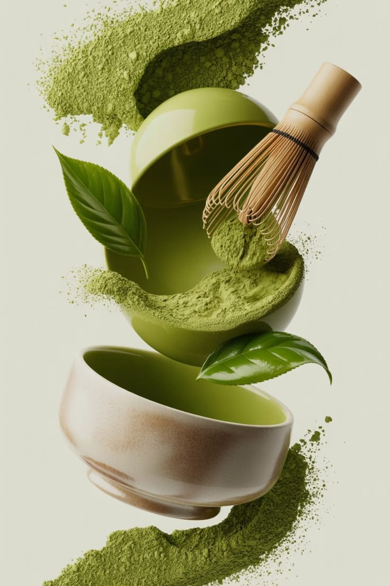
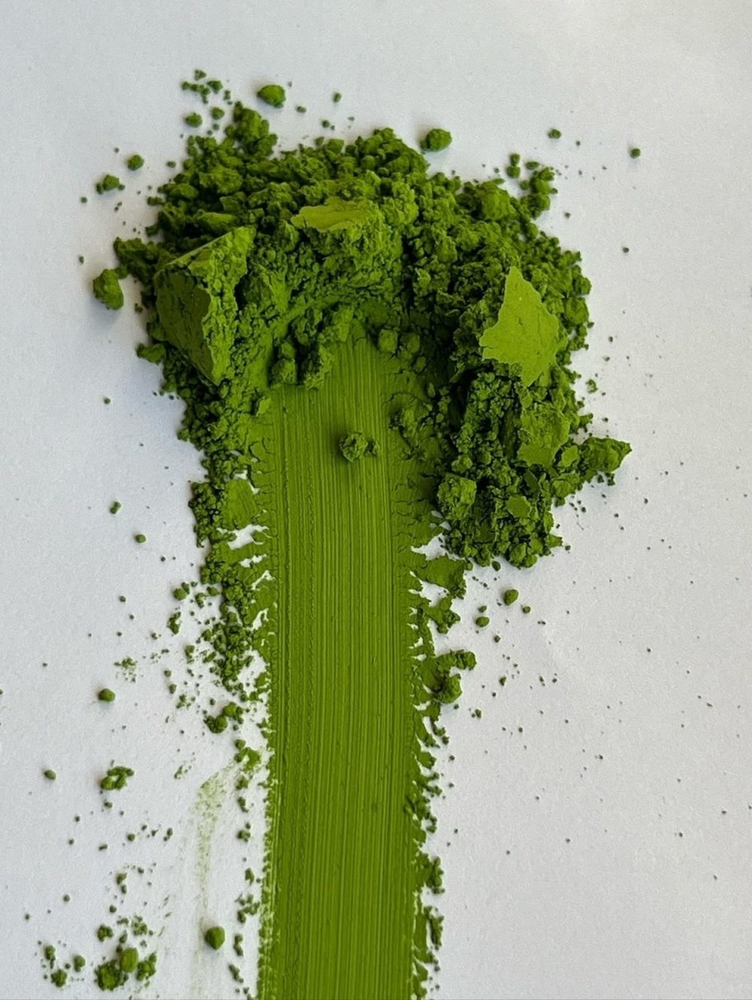

O nama
Zeleni čaj je nastao iz jednostavne želje da se vrati ukus prirode u svakodnevni trenutak odmora.

Naša priča
Verujemo da dobar čaj ne traži mnogo: kvalitetno lišće, čistu vodu i malo vremena samo za sebe.
Zato biramo prirodne sastojke i jednostavne recepte, a svaka šolja treba da bude svež, blag i osvežavajući početak ili kraj dana.
Galerija
Kliknite na sliku da je uvećate.








